✏️
Lápiz y marcador
Trazo libre con presión de stylus y marcador translúcido para resaltar sin tapar.

ScreenPencil convierte tu escritorio en una pizarra. Resalta, dibuja flechas, escribe, haz zoom y captura — encima de cualquier app, durante tus presentaciones, clases y demos en vivo.
Un conjunto completo de herramientas de anotación, sin esconder nada detrás de un muro de pago.
Trazo libre con presión de stylus y marcador translúcido para resaltar sin tapar.
Líneas, flechas, rectángulos y elipses con vista previa. Edítalas después de crearlas.
Escribe encima de la pantalla con fuente y contorno, y numera pasos con badges.
Oscurece todo menos una zona — círculo o rectángulo con borde suave — para enfocar la atención.
Una lente que amplía cualquier detalle. Ajusta el zoom con la rueda del ratón.
Cambia a un lienzo opaco cuando necesites partir de cero, sin perder tus trazos.
Congela la pantalla para anotar sobre algo en movimiento (un vídeo, una animación).
Un overlay por pantalla con undo e historial compartidos. HiDPI y 4K nativos.
Exporta a PNG con tus anotaciones o cópialas al portapapeles con un atajo.
Paleta rápida, selector HSV, opacidad y grosor — recordados por herramienta.
Historial unificado de todos tus trazos y figuras. Limpia todo con una sola acción.
Activa el modo dibujo o cualquier herramienta sin tocar la app. Todos reasignables.
Interfaz en español, inglés, portugués, chino, ruso, italiano y francés — cambia al vuelo.
La barra de herramientas se oculta de las grabaciones y de la pantalla compartida: tus anotaciones se ven, la interfaz no.
Ghost (los clics atraviesan), trazo efímero (se desvanece solo) y un halo para resaltar el cursor.
Pulsa una herramienta y mira una muestra real hecha con la app. Haz clic en la imagen para ampliarla.
Vive en la bandeja del sistema. No interrumpe tu trabajo hasta que lo necesitas.
ScreenPencil arranca silencioso en la bandeja del sistema. Tu pantalla sigue 100% usable: clic, scroll, todo pasa a través.
Esperando…Pulsa el atajo global y un overlay transparente cubre toda la pantalla. Ahora todo lo que dibujes queda encima.
Ctrl+Alt+DElige una herramienta de la barra flotante: lápiz, flecha, texto, spotlight, lupa… Resalta lo importante en vivo.
P A T LGuarda una captura PNG con tus anotaciones, cópiala al portapapeles, o limpia y vuelve al trabajo. Tus trazos se conservan hasta que tú decidas.
Ctrl+Alt+SUna muestra de la sensación de trazo. La app real funciona igual… pero sobre toda tu pantalla.
✦ Mantén pulsado y arrastra para dibujar
Atajos globales reasignables y una tecla por herramienta. Sin tocar el ratón.
Todos los atajos globales son reasignables desde Ajustes.
El mismo lienzo, la misma sensación, en tus tres sistemas favoritos.
Compilación nativa con .NET y WPF. Per-monitor DPI, multi-monitor y bandeja del sistema.
DisponibleLa experiencia de anotación que inspiró el proyecto, ahora abierta y gratuita.
PróximamentePara creadores y educadores en GNOME, KDE y más. Wayland y X11 en el horizonte.
PróximamenteSin pruebas que caducan, sin funciones bloqueadas, sin tarjeta de crédito. Cada herramienta incluida.
¿Otra plataforma? macOS y Linux están en camino — entérate aquí.
ScreenPencil seguirá siendo 100% gratis y sin paywall. Si te ahorra tiempo en tus clases, demos o presentaciones, una donación nos ayuda a mantenerlo, mejorarlo y traerlo a más plataformas. Cada café cuenta ☕.
Sin presión: usar y compartir ScreenPencil también es una gran forma de apoyar 💜
Sí, completamente gratis y sin truco. No hay versión "Pro", ni suscripción, ni funciones bloqueadas. Es un proyecto de código abierto pensado para educadores, creadores y equipos que presentan a diario.
La versión para Windows 10/11 está disponible. Las versiones de macOS y Linux están en desarrollo; suscríbete o sigue el repositorio para enterarte del lanzamiento.
Nunca. Las capturas PNG salen limpias, exactamente como ves la pantalla con tus anotaciones. Puedes guardarlas o copiarlas al portapapeles.
No. En reposo el overlay es click-through: el ratón pasa a través como si la app no existiera. Solo al activar el modo dibujo (un atajo global) la pantalla se vuelve un lienzo.
Sí. Hay un overlay por pantalla con historial y deshacer compartidos, y soporte per-monitor DPI para que los trazos se vean nítidos en pantallas HiDPI / 4K.
Todos los atajos globales son reasignables desde Ajustes → Teclas de acceso rápido, y se guardan en tu perfil. Pensado para teclados en español / LATAM.
Por supuesto. Uso personal, educativo y comercial, sin restricciones ni licencias que comprar.
El núcleo ya está completo y es gratis. Seguimos puliendo — esto es lo siguiente.
Descarga ScreenPencil y empieza a dibujar sobre tu pantalla en menos de un minuto.
Descargar gratis